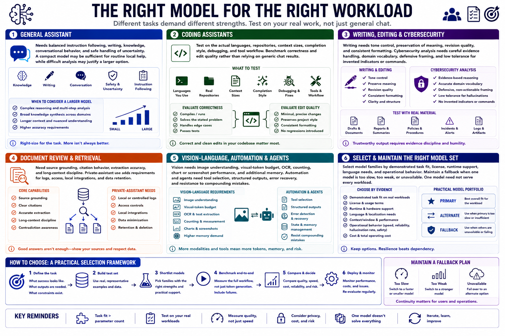

Choosing by Use Case
Connecting to LMS... Progress: in progress

Narration
A general assistant needs balanced instruction following, writing, knowledge, conversational behavior, and safe handling of uncertainty. A compact model may be sufficient for routine local help, while difficult analysis may justify a larger option.
Coding assistants should be tested on the actual languages, repositories, context sizes, completion style, debugging, and tool workflow. Benchmark correctness and edit quality rather than relying on generic chat results.
Writing and editing need tone control, preservation of meaning, revision quality, and consistent formatting. Cybersecurity analysis needs careful evidence handling, domain vocabulary, defensive framing, and low tolerance for invented indicators or commands.
Document review and retrieval need source grounding, citation behavior, extraction accuracy, and long-context discipline. Private-assistant use adds requirements for logs, access, local integrations, and data retention beyond model quality.
Vision-language workloads need image understanding, visual-token budget, OCR, counting, chart or screenshot performance, and additional memory. Automation and agents need tool selection, structured outputs, error recovery, and resistance to compounding mistakes.
Select model families by demonstrated task fit, license, runtime support, language needs, and operational behavior. Maintain a fallback when one model is too slow, too weak, or unavailable. One model need not serve every workload.